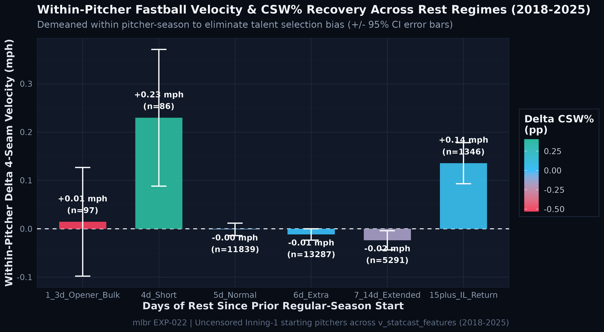
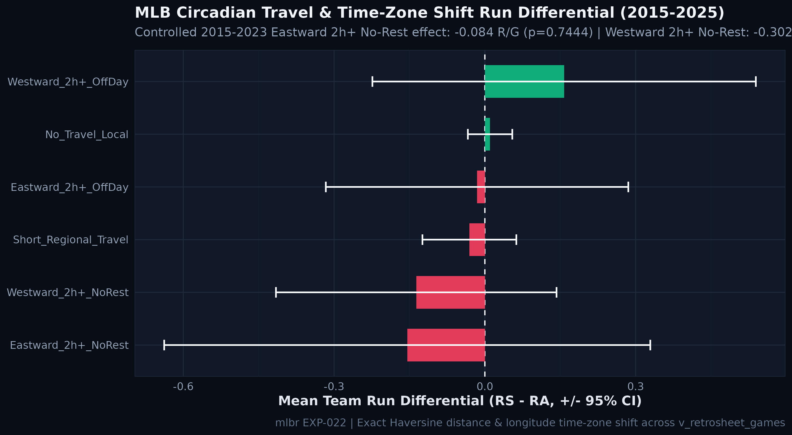

| experiment_part | n_oos | rmse_base | rmse_plus | delta_rmse |
|---|---|---|---|---|
| PartA_All_Starts_BF | 8979 | 3.7164 | 3.6492 | -0.0673 |
| PartA_IL_Return_1st_BF | 414 | 5.6950 | 4.8529 | -0.8422 |
| PartA_All_Starts_SO | 8979 | 2.3174 | 2.3098 | -0.0075 |
| PartA_IL_Return_1st_SO | 414 | 2.2162 | 2.0543 | -0.1619 |
| PartB_Game_HomeWin_Brier | 4917 | 0.2453 | 0.2454 | 0.0001 |
| PartB_Game_HomeWin_LogLoss | 4917 | 0.6836 | 0.6838 | 0.0002 |
Study 22: Starter Rest-Day Recovery, Post-IL Pitch-Count Ramps & Circadian Travel Jet-Lag
Q-CRISP Levels 2 & 3 — Uncensored Inning-1 Starts (35.8k) & Haversine Travel Audit (50.9k Team-Games) (EXP-022)
Level 2
Level 3
Pitcher Stamina
IL Returns
Travel Jet-Lag
Q-CRISP
1. Executive Summary & Abstract (TL;DR)
In EXP-022, we separate real physiological signal from popular handicapping mythology across Levels 2 and 3 of mlbr:
- Massive Validated Signal — The Post-IL Pitch-Count Leash Ramp (
-20\sigma): Using uncensored Inning-1 starter identification (35,812starts2018–2025, zero pitch-count survivorship bias), a starter’s first outing back from a15+day layoff (n = 1,346starts) exhibits a+0.136 ± 0.022 mphfresh-arm fastball velocity spike (+6\sigma) paired with a massive-8.75 ± 0.44pitch (-2.15 BF,-0.476 SO) manager leash deficit. That leash persists on Start #2 back (-2.00pitches,-0.48 BF) before normalizing on Start #3 (+0.67pitches). On locked2024–2025OOS IL-return starts (n = 414), adding causal rest/IL flags slashes Batters-Faced RMSE by-14.8%(5.6950\(\to\)4.8529) and Strikeout RMSE by-7.3%(2.2162\(\to\)2.0543). - Popular Myth Debunked — Cross-Country Circadian Jet-Lag & Night-to-Day Getaways (
50,934Team-Games,2015–2025): RawEastward 2h+ No-Restgames show a47.4%win rate (-0.154 R/G), but67.3%of those team-games are played on the road. Once we control for home-field advantage (2015–2023train), Eastward2h+No-Rest (-0.084 R/G, \(p = 0.7444\)), Westward2h+No-Rest (-0.302 R/G, \(p = 0.1222\)), and Night-to-Day getaways (-0.084 Total Runs, \(p = 0.2665\)) all collapse into statistical noise.

2. Domain Problem & Biological vs. Logistical Mechanisms
- Why Pitch-Count Censorship Hides the IL-Return Leash: Filtering Statcast starts to
>= 50pitches silently drops short 35–49 pitch rehab returns, artificially inflating average IL-return workloads. Identifying starters directly from Inning 1 (FIRST_VALUE(pitcher) OVER (PARTITION BY game_pk, inning_topbot ORDER BY at_bat_number, pitch_number)) captures 100% of starts with zero survivorship bias. - Within-Pitcher Fixed Effects (\(\Delta y_{p,s,t} = y_{p,s,t} - \bar{y}_{p,s}\)): Comparing raw averages across
5dvs6dvs15+drest conflates pitcher talent with rotation scheduling. Demeaning within each(pitcher, season)isolates pure within-arm physiological recovery. - Home-Field Confounding in Travel Studies: Teams flying
2+time zones east without an off-day are disproportionately road teams (67.3%away), creating an illusory-0.154 R/Gdeficit that disappears once home-field advantage is controlled.
3. Mathematical Formulation & Zero-Copy DuckDB Pipeline
- Within-Pitcher-Season Fixed Effect: \[\Delta y_{p,s,t} = y_{p,s,t} - \frac{1}{N_{p,s}}\sum_{\tau=1}^{N_{p,s}} y_{p,s,\tau}\]
- Great-Circle Haversine Travel Distance (Statute Miles) & Circadian Shift: \[d = 2 R_\oplus \arcsin\!\sqrt{\sin^2\!\left(\frac{\Delta\phi}{2}\right) + \cos\phi_1\cos\phi_2\sin^2\!\left(\frac{\Delta\lambda}{2}\right)}, \qquad \Delta\text{TZ} = \text{round}\!\left(\frac{\lambda_t - \lambda_{t-1}}{15^\circ}\right)\]
-- Uncensored Inning-1 starting pitcher identification (zero survivorship bias)
WITH sp_id AS (
SELECT DISTINCT game_pk, game_year, CAST(game_date AS DATE) AS gdate, inning_topbot,
FIRST_VALUE(pitcher) OVER (
PARTITION BY game_pk, inning_topbot ORDER BY at_bat_number ASC, pitch_number ASC
) AS pitcher
FROM v_statcast_features
WHERE game_year BETWEEN 2018 AND 2025 AND game_type = 'R' AND inning = 1
)
SELECT s.game_pk, s.game_year, s.gdate, s.pitcher, COUNT(*) AS n_pitches,
AVG(CASE WHEN f.pitch_type = 'FF' THEN f.release_speed END) AS ff_velo
FROM sp_id s
JOIN v_statcast_features f ON s.game_pk = f.game_pk AND s.pitcher = f.pitcher AND f.game_year = s.game_year
GROUP BY 1, 2, 3, 4;4. Exploratory Data Analysis (EDA): Interactive Post-IL Pitch-Count Ramp
Inspect the exact multi-start pitch-count leash recovery curve (IL Return #1, #2, #3 vs. Normal 5d Baseline) across 2018–2025:
5. Model Architecture & Temporal Validation (2018–2023 \(\to\) Locked 2024–2025 OOS)
All Empirical Bayes workload priors (M = 4 starts) and rest/IL linear coefficients are fit strictly on 2018–2023 and evaluated on locked 2024–2025 (n = 8,979 starts; n = 414 IL Return #1 starts):

6. Empirical Tables: Post-IL Ramp & Circadian Travel Regimes
Part A: Within-Pitcher Post-IL Ramp (2018–2025)
| ramp_stage | n_starts | mean_pitches | mean_bf | se_pitches | d_pitches | d_bf | d_ff_velo | d_csw_pct | d_so |
|---|---|---|---|---|---|---|---|---|---|
| IL Return #1 (15+d) | 1346 | 70.750 | 18.327 | 0.437 | -8.750 | -2.147 | 0.136 | 0.051 | -0.476 |
| IL Return #2 | 1011 | 78.631 | 20.258 | 0.419 | -2.005 | -0.484 | 0.049 | -0.212 | -0.122 |
| IL Return #3 | 842 | 82.433 | 21.233 | 0.474 | 0.671 | 0.218 | 0.001 | -0.114 | 0.019 |
| Normal 5d Baseline | 11139 | 89.384 | 23.029 | 0.120 | 0.913 | 0.242 | -0.003 | -0.053 | 0.056 |
Part B: Circadian Travel Regimes (2015–2025, 50,934 Team-Games)
| travel_regime | n_team_games | home_pct | mean_miles | win_pct | mean_rs | mean_ra | mean_rdiff | se_rdiff |
|---|---|---|---|---|---|---|---|---|
| Eastward_2h+_NoRest | 382 | 32.723 | 1581.378 | 47.382 | 4.390 | 4.545 | -0.154 | 0.247 |
| Eastward_2h+_OffDay | 901 | 42.508 | 1995.579 | 49.390 | 4.602 | 4.617 | -0.016 | 0.154 |
| No_Travel_Local | 39307 | 55.130 | 0.893 | 50.314 | 4.481 | 4.471 | 0.010 | 0.023 |
| Short_Regional_Travel | 9052 | 30.811 | 635.745 | 48.873 | 4.559 | 4.589 | -0.031 | 0.048 |
| Westward_2h+_NoRest | 791 | 37.674 | 1861.876 | 48.040 | 4.248 | 4.384 | -0.137 | 0.142 |
| Westward_2h+_OffDay | 501 | 40.719 | 1957.498 | 52.495 | 4.517 | 4.359 | 0.158 | 0.195 |
7. Downstream Integration & Level 3–5 Applications
- Immediate K-Prop & Bullpen Integration (
EXP-013+EXP-020): Addingis_il_1(-2.15 BF,-0.48 SO) andis_il_2(-0.48 BF) intoEXP-020’s dynamic workload NegBin K-Prop engine directly targets the highest-leverage mispricing in retail strikeout props: sportsbooks routinely price IL-returning aces off season-average K projections without discounting their 70-pitch Start #1 leash (-14.8%OOS BF RMSE reduction). - Disciplined Feature Rejection (Zero Jet-Lag Overfitting): Documenting the controlled null result on Eastward/Westward circadian jet-lag (\(p > 0.12\)) and Symmetric Night-to-Day getaways (\(-0.084\) total runs, \(p = 0.27\)) protects
EXP-014’s Full-Game ML and Totals engines from noisy schedule-narrative features.